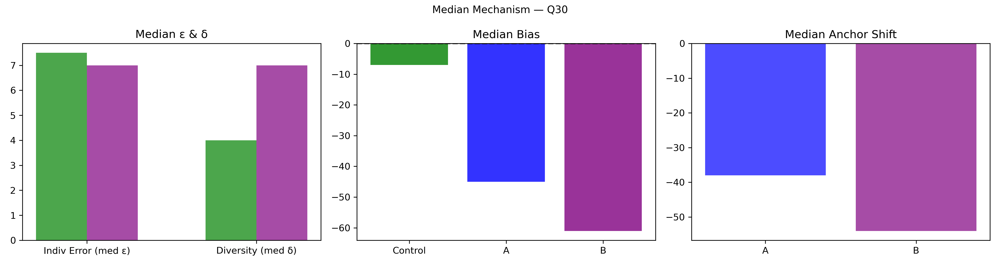

Question Q30: What will the temperature be in Amsterdam at noon local time on Saturday?
Super Summary
================================================================================
QUESTION Q30: 04_Export_0703_stats_ismbVHVgvY.csv
What will the temperature be in Amsterdam at noon local time on Saturday?
Truth = 73.0
N_ctrl = 160 N_ext = 75
================================================================================
[1] COLLECTIVE ERROR (E)
Control Ec: 5.9629 ± 0.7932
CI = [ 4.4663 , 7.6143 ]
Extremized Ex: 3.6279 ± 1.1224
CI = [ 1.5067 , 5.9477 ]
Difference (Ec - Ex) = 2.3350
Percent Change = 39.16%
Bootstrap:
P(Ex < Ec) = 0.9560
→ 95.6% of samples show extremized < control
[2] INDIVIDUAL ERROR (ε)
Control mean ε = 7.2062
Extremized ε = 8.0267
Percent Change = 11.38%
Welch t-test: t = -0.894, p = 0.373
Cohen's d = -0.136
[3] DIVERSITY (δ)
Control SD = 6.8469
Extremized SD = 9.9760
Percent Change = 45.70%
Levene p = 0.0006308
[4] ANCHOR DIAGNOSTICS
Anchor A = 81.0
Anchor B = 56.0
A_effective = False
B_effective = False
[5] EQUATION 6 CHECK
w_L = 0.2968 w_H = 0.5629
Delta = -27.7690
Criterion_L = False Criterion_H = False
Meets both = False
[6] δ–ε–E SCENARIO
Scenario: δ:up, ε:up, E:down
Mechanism Explanation: True Barrera extremization: diversity increases from opposite anchor shifts. Individual errors rise, but opposing biases cancel enough to reduce collective error.
================================================================================
FINAL INTERPRETATION (with actual figures)
================================================================================
For Q30, collective error shifted from 5.96 to 3.63 (39.16%). Bootstrap = 95.6%. Individual error changed by 11.38%, diversity changed by 45.70%. Scenario = δ:up, ε:up, E:down. Equation 6 feasibility = False.
================================================================================
Median Mechanism Plot
